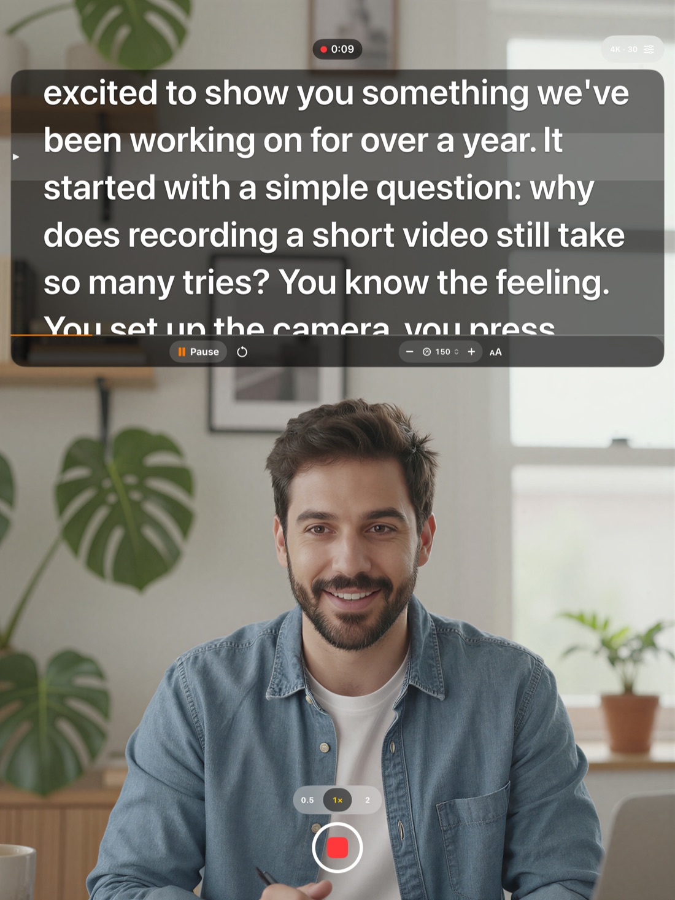
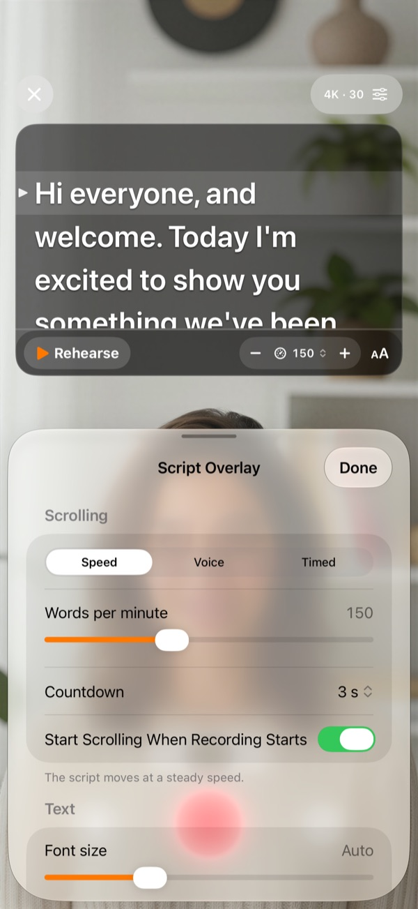
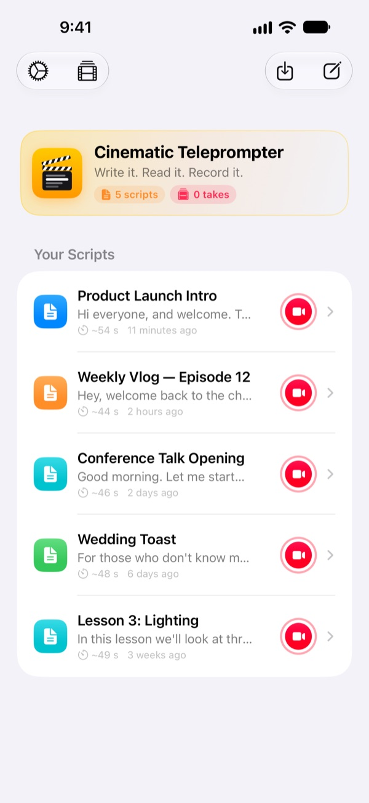
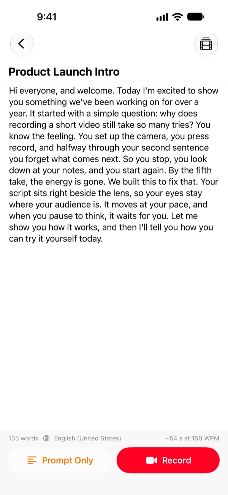
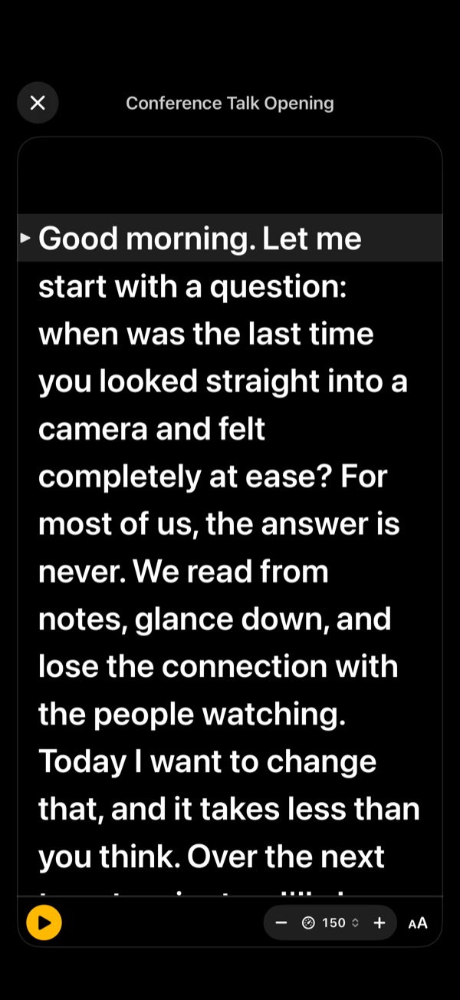

01Features
What it does
- Eye contact, naturallyThe script sits in a band at the edge nearest the camera, so you look almost straight into the lens while you read.
- Cinematic modeShallow depth of field with focus you can move, on iPhones that support it. The clips stay editable in Photos.
- Follows your voiceVoice-Follow scrolls as you speak, waits when you pause and catches up if you skip a line.
- Real camera controlsFront or rear camera, lens buttons, zoom, focus, exposure, resolution, frame rate, stabilization and a grid.
- Takes are never lostEvery recording stays in the app's Takes list until you delete it, even if you never saved it.
- Scripts on every deviceScripts sync between your iPhone and iPad through your own iCloud.
- Built for iPhone DuoFilming someone with the rear camera? Unfold iPhone Duo and the script also shows on the outer display, facing them.
- In five languagesEnglish, Korean, Japanese, Simplified Chinese and Canadian French, and each script can have its own speech language.
02iPad

03How to use it
How to use it
- Start your free trial. The first launch shows the plans. Tap Start Free Trial to try everything free for 7 days with the Yearly plan, or choose the Monthly plan or Lifetime Unlock instead.
- Add a script. Tap New Script and type or paste, or Import a .txt or .rtf file. The editor shows the word count and how long the script takes to read.
- Open the recorder. Tap Record on a script. Allow the camera and microphone the first time.
- Set up the shot. Flip between the front and rear camera, choose Normal or Cinematic, pick a lens, and pinch to zoom. Tap the picture to focus.
- Rehearse if you like. Rehearse runs the script without recording, so you can check the speed.
- Record. Tap the record button. After the countdown the script starts scrolling. While you record you can pause the scroll, go Back a Few Lines or change the speed.
- Review and save. When you stop, the take plays back. Choose Photos or Files to save it, Share to send it, or Retake to go again.

04The script
Make the script work for you
Three ways to scroll
- Constant Speed
- Scrolls at the words-per-minute you set. Use Faster and Slower to adjust it on the fly.
- Voice-Follow
- Listens as you read and keeps your place. Each script can have its own language: tap the globe under the script. Speech is recognized on your device.
- Timed
- Fits the whole script into a length you choose, with Longer and Shorter.
Script Overlay
In the recorder, tap AA to open Script Overlay. There you can choose how the script scrolls, set the countdown, change the text size, colour and band position, show a Reading Line and Fade Words Already Read. For teleprompter glass, turn on Mirror Horizontally or Flip Vertically.
Cinematic controls
In Cinematic mode, a slider sets the simulated aperture. Tap a person or object to move the focus to it, and touch and hold to keep focus locked on them. Cinematic availability depends on the device and camera. If it isn't available, the switch says so. Most iPads don't offer it.
Prompt Only
Tap Prompt Only in the script editor to scroll the script full screen without the camera, for reading on a stage or a call.
05Screens



06Pricing
Pricing
Start the free trial with the Yearly plan and everything is unlocked for 7 days; the app can remind you 2 days before it ends. After that, keep the Yearly plan, switch to Monthly, or buy Lifetime Unlock once, with no subscription. Any of them unlocks the app on all your iPhones and iPads signed in with the same Apple Account. Prices are shown in the app.
- Writing, importing and editing scripts
- Prompt Only mode
- Watching, saving and sharing takes you already recorded
- iCloud sync of your scripts
- Recording new takes, Normal and Cinematic
- Voice-Follow scrolling
You never lose access to your videos. On a new device, use Settings → Restore Purchases. To change or cancel a plan, use Settings → Manage Subscription.
07Questions
Questions
Why is Cinematic greyed out?
The camera you are using doesn't support it. Cinematic is checked for each device and camera, and is not available on most iPads. If you switch to a camera without it, the app goes back to Normal by itself. Settings → Device Capabilities shows which cameras support it.
Do Cinematic videos stay editable?
Yes. Saved to Photos, a Cinematic take can still be edited there, including moving the focus and changing the depth effect. Cinematic takes are always saved as HEVC so this keeps working.
My videos won't play on an older device
Turn on Settings → Use H.264. The files are larger but play almost anywhere. Cinematic takes always use HEVC.
My front-camera video is mirrored, or isn't
The preview is mirrored like a mirror, but saved videos are not, unless you turn on Settings → Mirror Saved Video.
Do my videos sync between devices?
Scripts and shared preferences do. Videos are too large, so they stay on the device that recorded them. Save them to Photos or Files to move them.
Is my voice sent anywhere?
No. Voice-Follow uses speech recognition on your device. See the privacy policy.